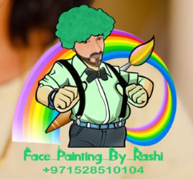

Face Painting by Rashi turns every event into a colorful adventure filled with imagination and fun. With a steady hand and a creative mind, Rashid transforms ordinary faces into magical works of art—whether it’s a roaring tiger, a sparkling butterfly, a brave superhero, or a dazzling princess. Using safe, skin-friendly paints, he carefully designs each face to match the child’s personality and excitement. The laughter, smiles, and amazed reactions make face painting one of the most loved activities at birthday parties, school fairs, and celebrations. With her talent and passion for art, Rashi creates unforgettable moments and adds a bright splash of color to every special occasion.